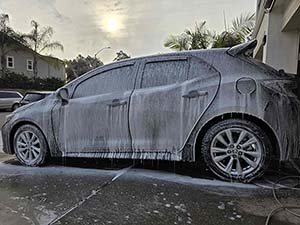

About Summit Detailing
Summit Detailing was started by Kevin Do, a poor college boy from the humble and small neighborhood of 4S Ranch in San Diego, California. His dad had purchased a pressure washer to clean the ground and windows but after seeing detailing videos on YouTube, Kevin saw the opportunity to use the pressure washer to clean his car! After countless hours of research and practice, Kevin was able to find the optimal equipment and learn the proper techniques to clean his car. He washed his friends and family's cars for free and decided to start his own business to help fund his passion for cars. Kevin is constantly expanding his skillsets and knowledge in and out of car detailing to provide the best service possible.
